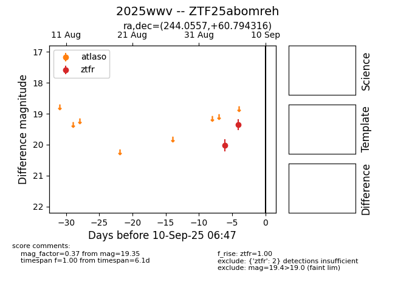

FINK: ZTF25abomreh
Lasair: ZTF25abomreh
ALeRCE: ZTF25abomreh
TNS: 2025wwv
YSE: 2025wwv
ZTF25abomreh (ztf,fink)
2025wwv (tns,yse)
equatorial (ra, dec) = (244.0557,+60.79432)
galactic (l, b) = (92.1136,+42.07876)

last atlasc=18.86, atlaso=18.72, ztfg=18.95, ztfr=18.62
1 atlasc, 3 atlaso, 1 ztfg, 5 ztfr detections